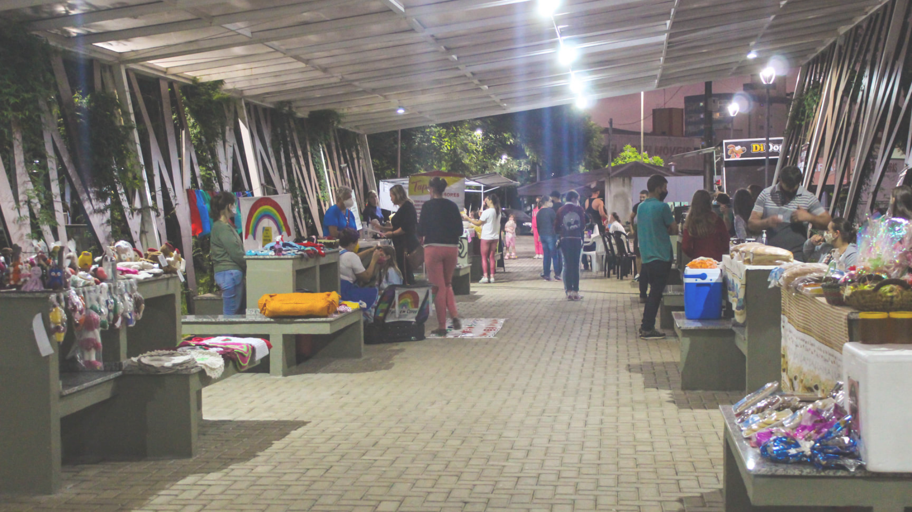
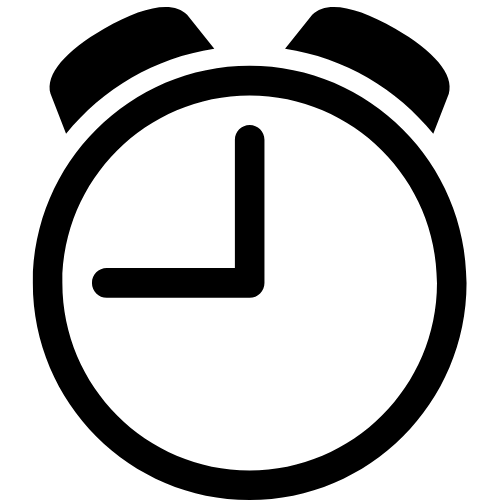
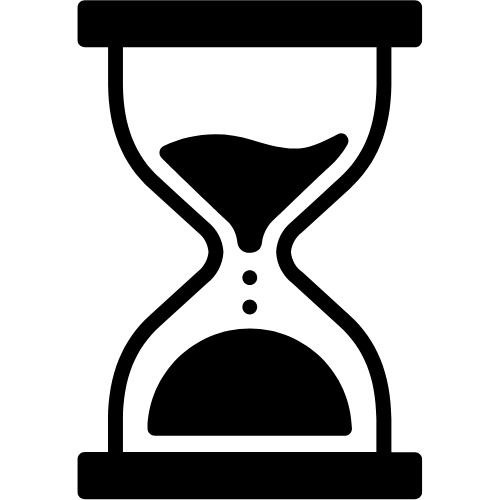
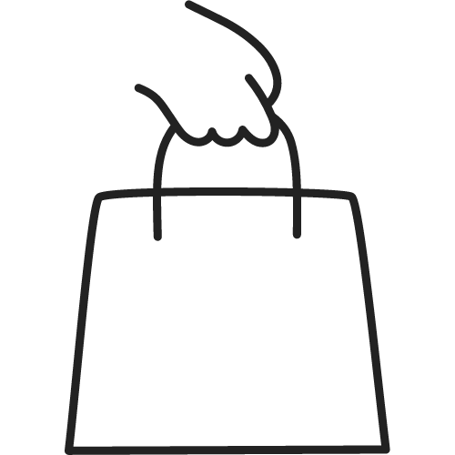
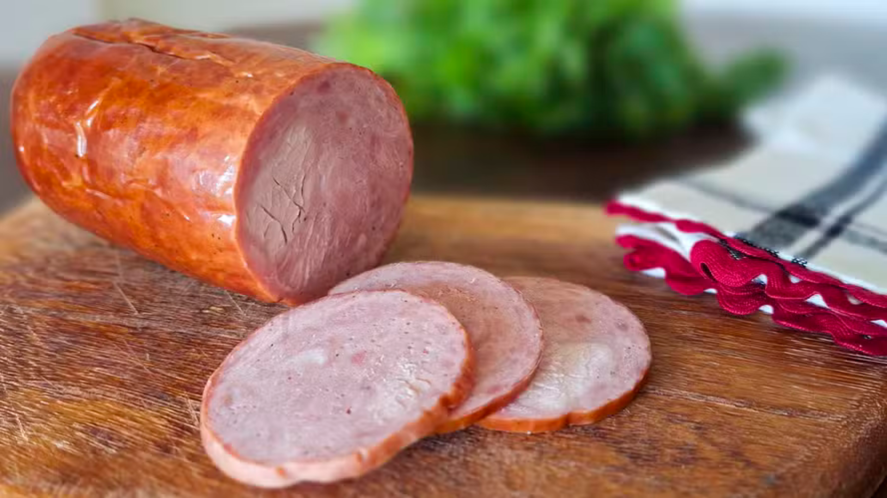

.

A Feira do Agricultor é um evento que realça a rica cultura e tradição de Prudentópolis. É um ponto de encontro onde artesãos locais, comerciantes, agricultores e visitantes se reúnem para celebrar o melhor da região.
No final do século 19, por volta de 1893, foram atraídas para a região de Prudentópolis cerca de 1.500 famílias ucranianas, por isso, essa cultura é muito presente na feira.
Vamos explorar sua história, sabores e sua importancia para a comunidade!
Localização

Com uma localização central, a Feira do Agricultor oferece uma oportunidade única para os produtores rurais compartilharem seus produtos diretamente com os consumidores urbanos.
Está estrategicamente localizada no coração da cidade, proporcionando fácil acesso tanto para os residentes locais quanto para os visitantes. Situada na Rua Coberta, ao lado da rodoviária municipal, a feira se tornou um ponto de encontro popular para aqueles que desejam explorar o melhor dos produtos agrícolas e artesanais da região.
O evento geralmente ocorre nos sábados a partir das 6h

Clique aqui para obter a localização exata!
Origem

Originária como uma pequena iniciativa local, a feira cresceu para se tornar um dos eventos da região, representando não apenas um mercado de produtos, mas também um símbolo da identidade cultural e econômica da comunidade.
Alguns dos produtos comercializados na feira


Um dos produtos é a Pesanka, parte da cultura ucraniana, simboliza a vida, a Ressurreição de Cristo, o renascimento espiritual do homem.

Cracóvia, fabricado artesanalmente e de cultura ucraniana, o embutido é feito à base de cortes nobres de carne suína e possui sabor marcante.

Frutas e vegetais frescos e sem fertilizantes, produzidos pela agricultura familiar.
A Feira do Agricultor promove oportunidades tanto para os produtores rurais quanto para os moradores urbanos. A feira oferece acesso direto ao mercado urbano, impulsionando as vendas e promovendo a sustentabilidade econômica nas áreas rurais.
A feira também proporciona acesso a produtos frescos e artesanais locais, promovendo uma comunidade mais saudável e consciente, alem disso, ajuda a atrair turistas, impulsionando a economia local e preservando a cultura do povo Prudentópolitano.
A Feira do Agricultor em Prudentópolis é um exemplo vivo de como a conexão entre o campo e a cidade pode gerar oportunidades significativas.Convidamos a todos a participarem dessa experiência única e contribuírem para o crescimento e prosperidade de nossa comunidade.